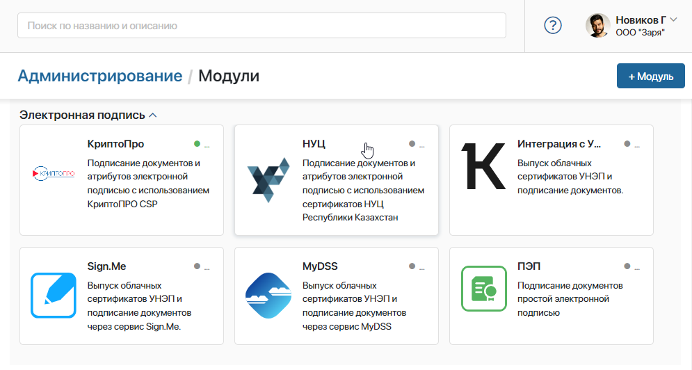
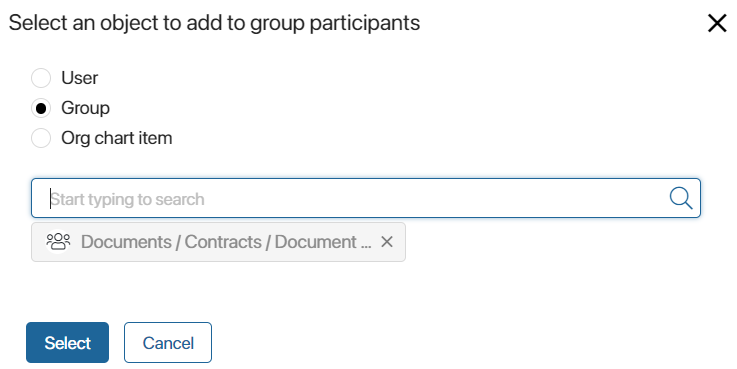
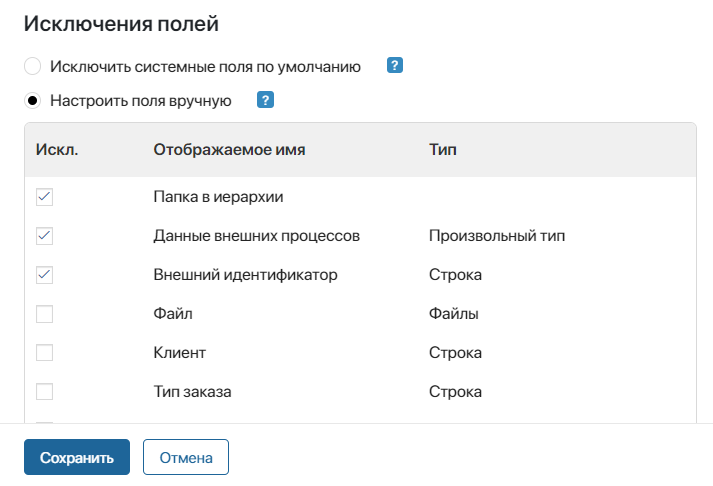

The digital signature allows you to sign attributes of app items, files in Document type apps, and decisions made in approval tasks. To make signing available to users:
- Enable integration with a digital signature certificate provider.
- Configure signing in apps.
- Set up the signing widget on pages.
начало внимание
Only users included in the Administrators group can manage signing settings in the system.
конец внимание
Step 1. Enable integration with a signature provider
Enable integration with one or more digital signature providers. To do this, go to Administration > Modules > Digital signature, click on the module name, and on the opened page click Enable.

If necessary, specify connection parameters. For more information about configuring standard signing modules, see the Digital signature providers (CryptoPro, NCA) and Simple electronic signature articles.
You can also configure integration with a provider that is not available by default. To do this, create a custom module and within it add a widget with the Sign the app on the view form extension. In the widget script, configure data exchange with an external service.
If you enable multiple digital signature modules at the same time, the user will be able to select any of the available providers when signing.
Step 2. Configure signing in an app
Configure the settings in each app where signing is required. To do this, open the app page and click the gear icon next to its name. Select Signature Settings.
Access permissions
By default, no users have the right to sign app items, so they don’t see the Sign button on item pages.
Specify who can sign app items from their pages. To do this, click the magnifying glass icon and add users, groups, or org chart items to the list.

Note that if a signature is used in the signing, approval, and view tasks in a business process, it is not necessary to grant users permissions in the app. They gain rights automatically.
Field exclusions
Specify which fields should not be signed when signing item attributes.
The values of some fields may change automatically during the process execution, for example, the value of the Changed on system field. If a field like this is signed, the item signature will become invalid when the value changes. To avoid this, exclude such fields from the list of attributes to be signed.
To do this, select the appropriate option:

- Exclude system fields. Disable signing system fields that are the same for all apps, such as ID, Index, Date created, etc. The following system fields are not excluded: Name in all apps, File in Document type apps, Start date and End date in Event type apps.
- Select particular fields. Manually select fields that will not be signed. The list includes all system fields as well as properties created when customizing the app. Make sure you exclude all fields whose value may change during process execution, such as Status and Changed on.
Step 3. Set up the signing widget
If a user has signing permissions in the app, they will see a Sign button on the item page. It is part of the Sign app item widget, which is added to the top panel of item view forms by default.
The widget is customized separately for each app. You can make a comment required upon signing, specify whether to sign attributes and file in the item, and select the default signature provider.
Read more in the Sign app item article.
Found a typo? Select it and press Ctrl+Enter to send us feedback